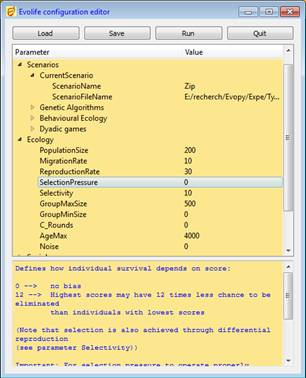

Evolife
Jean-Louis Dessalles
Telecom ParisTech
www.dessalles.fr
2. How to execute Evolife (+ download)
7. Create your
own Evolife scenario
8. Use Evolife’s components separately
(graphics, ecology, genetic algorithm)
2. How
to execute Evolife
 Installation
Installation
Evolife can be downloaded from: Evolife.zip (2012
version: Evolife-2012-3c.zip)
 You
may extract the Evolife directory into an appropriate
location.
You
may extract the Evolife directory into an appropriate
location.
 If
you don’t know how to extract files from the archive (normally, you do it by
merely clicking on it), you may copy the following two lines into a text file
named unzip.py:
If
you don’t know how to extract files from the archive (normally, you do it by
merely clicking on it), you may copy the following two lines into a text file
named unzip.py:
import zipfile, sys
zipfile.ZipFile(sys.argv[-1]).extractall()
and then execute the
command: “ python unzip.py
Evolife.zip ”
- Evolife is written in Python (http://www.python.org/) and should therefore
run on various platforms. You should install Python first. The current version of Evolife runs with versions from 2.4 to 2.7 of
Python. It has not yet been adapted to Python 3.0.
- Evolife graphics uses the PyQT4 package.
- Optional, but useful: library psyco, once installed, makes Evolife run three time faster on certain versions of Python. For python 2.6,
you get psyco from
there. Psyco does not seem to be available for higher versions of python.
 Execution
Execution
 On
Unix or Linux: The first time, execute the command: “ python first.py ”
On
Unix or Linux: The first time, execute the command: “ python first.py ”
Then, Evolife is launched by executing the
command “ ./starter ”
from the Evolife directory.
 On
MsWindows: Run “Starter.bat”
from the Evolife directory.
On
MsWindows: Run “Starter.bat”
from the Evolife directory.
 Starter shows a
configuration editor that allows you to choose a scenario and to modify
parameters, before running Evolife by clicking the [Run] button.
Starter shows a
configuration editor that allows you to choose a scenario and to modify
parameters, before running Evolife by clicking the [Run] button.

The
Evolife Configuration Editor
The configuration editor provides a short description of each parameter at the
bottom of the window.
The [Load] button loads an existing scenario. You may modify any parameter
value. It is recommended to start from an existing scenario when creating a new
one. If you need to add new parameters or modify the names of existing ones,
simply edit the EvolifeConfigTree.html file before executing Stater.bat.
The [Run] button executes Evolife. To do so, parameter values are
stored in Evolife.evo, and Main.py is executed. If you execute Main.py directly (sometimes useful to display an error when you customize Evolife), it will read Evolife.evo.
Configuration files (.evo files) are
text files containing parameter-value pairs (one pair per line, separated by
tab; integer values only). The scenario name is indicated by a variable
beginning with S_.
 You
may modify any Python source under the Evolife directory, but you will most probably start by modifying the scenarios
(see below).
You
may modify any Python source under the Evolife directory, but you will most probably start by modifying the scenarios
(see below).
 If
you experience difficulties with tabs
in your Python editor, you may execute ./Detabify.py (located in the Evolife directory) to replace all tabs by
four spaces in all Python source files.
If
you experience difficulties with tabs
in your Python editor, you may execute ./Detabify.py (located in the Evolife directory) to replace all tabs by
four spaces in all Python source files.
 Predefined
scenarios are located in the Scenarii directory. You may choose to add your own scenario in this directory.
Alternatively, you may rename and modify S_Void.py. When writing your scenario, you can redefine any of the functions
found in Default_Scenario.py. To do so, you may cut and paste
functions from various scenarios in the Scenarii directory into your scenario.
Predefined
scenarios are located in the Scenarii directory. You may choose to add your own scenario in this directory.
Alternatively, you may rename and modify S_Void.py. When writing your scenario, you can redefine any of the functions
found in Default_Scenario.py. To do so, you may cut and paste
functions from various scenarios in the Scenarii directory into your scenario.
 As
it stands, Main.py gives control to the Evolife main window and the simulation is run from there. However, the
simulation is kept separate from the window system. For specific applications
or tests, you may prefer to run the simulation step by step without any graphic
visualization. To do so, set the BatchMode parameter in the Configuration
Editor (Starter). In that case, no display takes place.
As
it stands, Main.py gives control to the Evolife main window and the simulation is run from there. However, the
simulation is kept separate from the window system. For specific applications
or tests, you may prefer to run the simulation step by step without any graphic
visualization. To do so, set the BatchMode parameter in the Configuration
Editor (Starter). In that case, no display takes place.
 The
output of Evolife are stored in the following files, placed by default in the
___Result directory:
The
output of Evolife are stored in the following files, placed by default in the
___Result directory:
-
<scen>.csv or <scen>_081016235225.csv (where <Scen> is the name of the scenario): contains the
results of a single experiment. The longer name appears in batch mode only,
indicating that the simulation was launched on October 16th, 2008,
at 11h52 pm. This file contains the coordinates of the various curves that
would have been displayed by Evolife if not in batch mode. This file can be executed using Microsoft-Excel
or equivalent.
-
<scen>.res or <scen>_081016235225.res (where <Scen> is the name of the scenario): contains the
average results of a single experiment. Such files may be concatenated to
average over several experiments.
When not in batch mode, running
several instances of Evolife simultaneously will cause these
output files to be overwritten by the last terminating instance.
The file Evolife_.evo (on the Evolife directory) contains the values of
parameters actually used in the
simulation (note the trailing underscore).
 Buttons
Buttons
[Genome]: Displays
the genomes of the population
-
Each horizontal line represents the genome of one individual
-
Vertical patterns result from correlations between individuals
[Photo]: Enters
Photo Mode:
-
Prints a few data on the console
-
Saves a screenshot for each opened window. Caveat: these are screenshot:
Screenshots are saved automatically depending
on Display Period, in .png files.
These files can be assembled into animated
gifs e.g. using ImageMagick.
If you enter Film mode (by pressing key 'v'),
photos are taken automatically
at each display period.
-
Saves the current plots in 'Evolife.csv' (which may be opened with Excel).
This file is also created when exiting
Evolife.
[Run]: Runs
the simulation in continuous mode
[Step]: Runs
the simulation stepwise
[T]: Displays
trajectories (when applicable)
[A]: Displays
alliances (social links between individuals, sorted by competence) (when
applicable)
[F]: Displays
agents' positions on a 2-D field
[L]: Log
messages (not implemented)
[Help]: Displays
this help file
 Shortcuts
Shortcuts
<Esc>: quits
the active window (and the application if main window is active) (like 'q')
<F1>: displays
this help file
<space>: runs
the simulation one step forward (like 's')
a: displays
alliances (social links between individuals, sorted by competence) (when
applicable)
c: runs
the simulation in continuous mode (like 'r')
f: displays
a 2-D field on which agents may be located
g: displays
genomes
h: displays
this help file
l: displays
log messages (not implemented)
m: alternatively
brings main window or satellite windows to foreground
q: quits
the active window (and the application if main window is active) (like
<Esc>)
r: runs
the simulation in continuous mode (like 'c')
s: runs
the simulation one step forward (like <space>)
t: displays
trajectories (when applicable)
v: enters
film mode. One picture per opened window is recorded
z: shrinks
satellite windows (genomes, alliances, labyrinth...) (dezoom)
-: shrinks
satellite windows (genomes, alliances, labyrinth...) (dezoom)
+: expands
satellite windows (genomes, alliances, labyrinth...) (zoom)
(these shortcuts are also available from
satellite windows)
2. How to execute Evolife (+ download)
7. Create your
own Evolife scenario
8. Use Evolife’s components separately
(graphics, ecology, genetic algorithm)
Evolife
Jean-Louis Dessalles
Telecom ParisTech
www.dessalles.fr